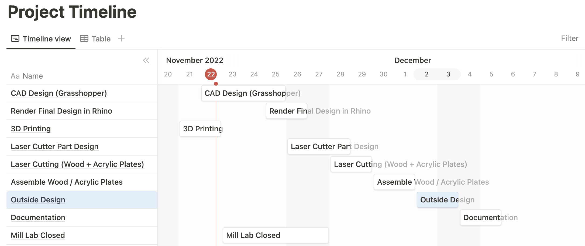
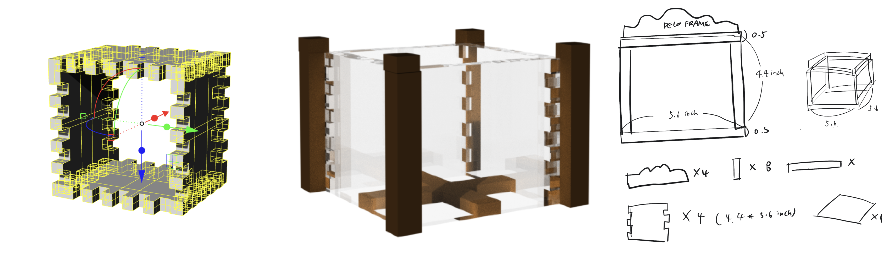
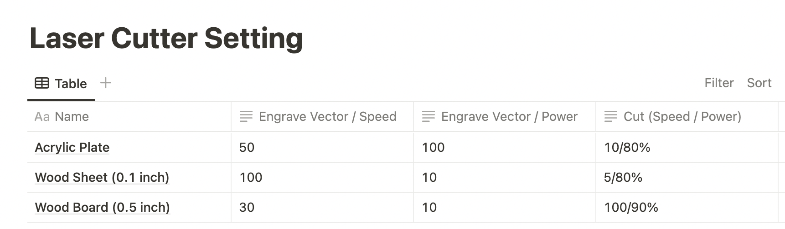

Concept & Idea Sketch ✍️ : Korean traditional glass lamp

This is a traditional Korean-style square glass lamp that was used in the Joseon dynasty, usually in the palace. This lamp usually hangs outside the palace when a party or event happens all night. I found the images of this lamp in the article and decided to re-design it in my style with the techniques that I learned during the digital fabrication class. This is the mood board that I created for the lamp design. I used a warm color palette and traditional Korean drawings using nature elements like flowers, bamboo, and butterflies.
Techniques I used for this project
1. Laser Cutting : outside lamp wall (acrylic plates), structure of the lamp (woodboards)
2. 3D Prinitng : Decoration of the Lamp
3. Grasshopper : To design the outisde lamp wall
4. Rhino : CAD Design for the lamp structure, decoration parts of the lamp
Bill of Materials 💵

This is the list of materials for the final project. I mentioned the usage of each materials, required qauntities, and their price. I also added the current status so that I can figure out what itmes I currently have and need to order in advance.
Project Timeline 💵

The outside design part (hand cutting and design with Hanji paper) took more time than I expected, so I adjusted the timeline.
Process
1. Grasshopper 💻

For the base rectangle and each joints of the the acrlyic plates, I used number slider and unit X,Y,Z to set the size. With the unit Z I divded them and use the number slider to set each joint's number. It is divided by the vertical of the rectangle, so that it can fit into it. I used "extrusion" and connect them into each unit vector, so that it can extrude every curbs together. To make every joints and curve connected, I used "Brep Join" and them merge them into one pieces to cut them into one piece in the laser cutter.
2. Rhino Modeling & Rendering ⬜️


Then I created my model in Rhino based on base of the grasshopper model (Acrylic box). For the outside wood frames of the lamp, I measured them and sketched the parts that I need for the assembly.
3. 3D Printing 🖨

I printed some 3D decoration parts for the lamp at Mill. I used the Dremel 3D printer and a transparent filament so the lamp light can go through easily. There were a hinge part between butterflies two wings, so I could attatched them more easily on the lamp outside. I downloaded the STL file from Thingivers, and resize them and edit the holes in the Mesh. I exported them into Cura, and printed.
4. Laser Cutting ✂️


I had three different materials, so I set the laser cutter in different settings for each material. For the wood parts, I have two different thickness, so I put them in different setting. Also, for the wood materials. there were burn on outside after laser cut, so I decided to color them into the same color with the burned trace.
Design and Hanji Cutting 🎨
Hanji is a traditional homemade paper. It has a unique texture and transparency and is very thin. I initially tried to laser cut them with my design, but when I tried it, there was a burn and flame when I started the laser cutting. I had changed the setting several times, but the Hanji paper was so flammable that it was difficult to cut them with a laser cutter. Hence, I decided to do hand cutting and tearing the paper apart, which made the output better. Because of the Hanji paper's fiber textures, it could be more aesthetically pretty when it was torn down apart.

Final Deliverable

Detail View


Appendix
Link to the Grasshopper File (ghx) by. Soo Hwang Link to the Rhino file Link to the .ai file for the laser cutting Link to the Rhino file for the laser cutting (3dm) Butterfly STL File (edited by. Soo Hwang)
Citation
Reference : Grasshopper Tutorial with Parametic Modeling Butterfly STL Model from Thingivers Article about Josun Square Glass Lamp & Images